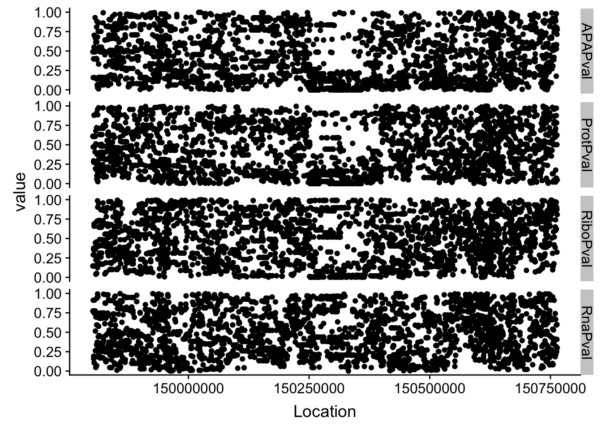
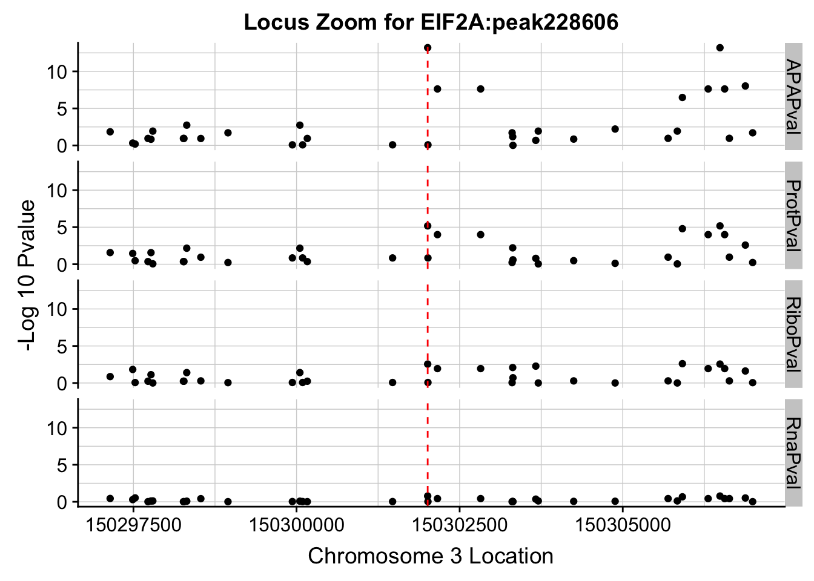
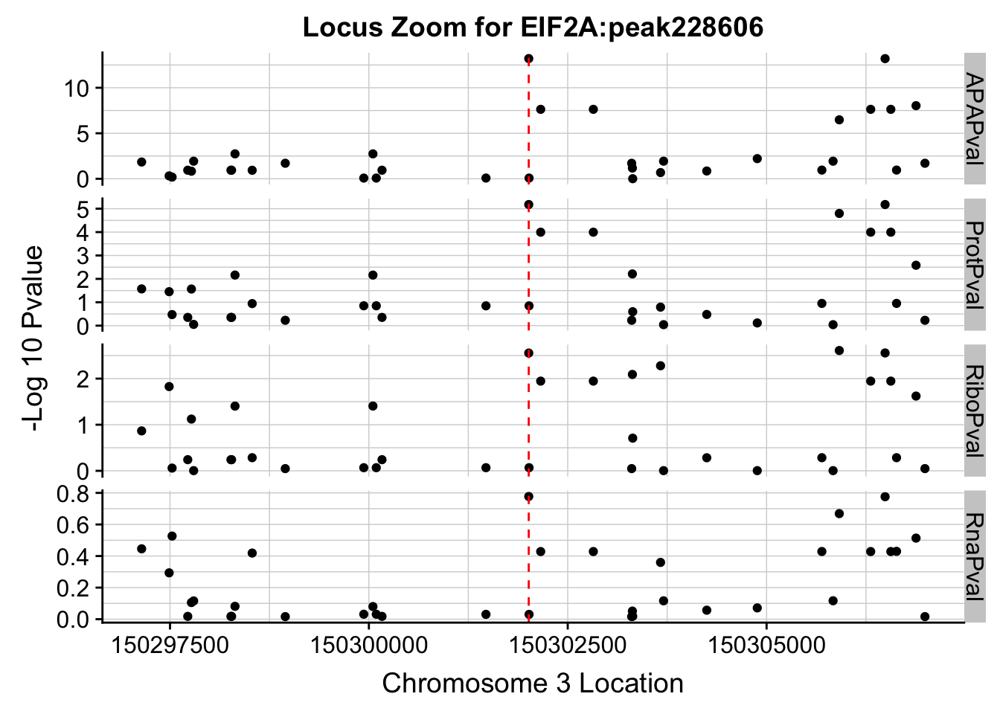
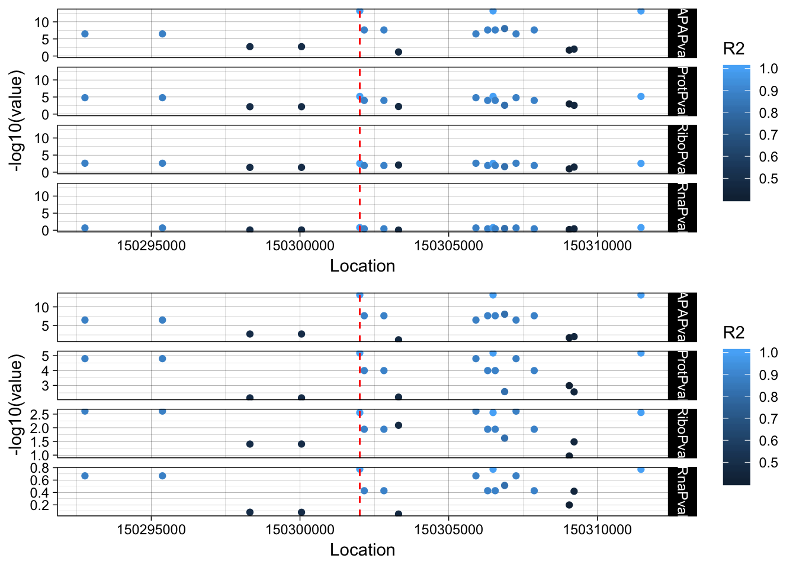
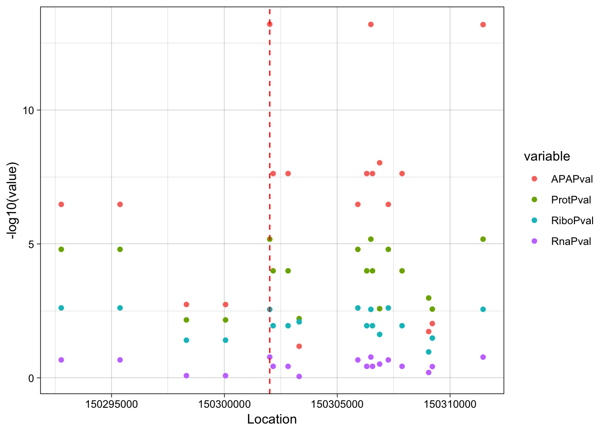
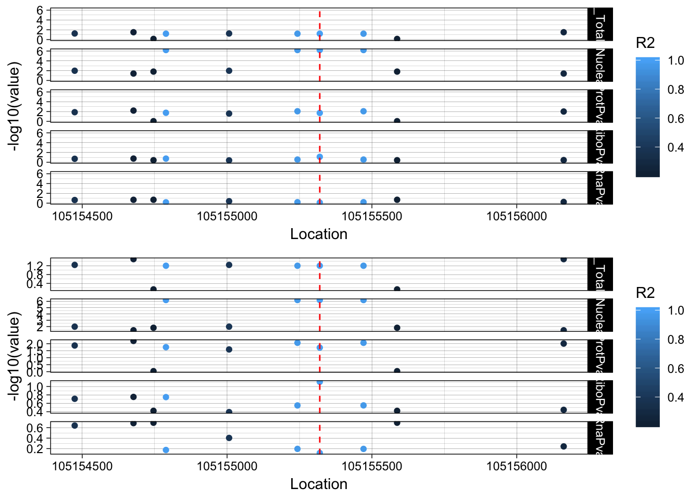
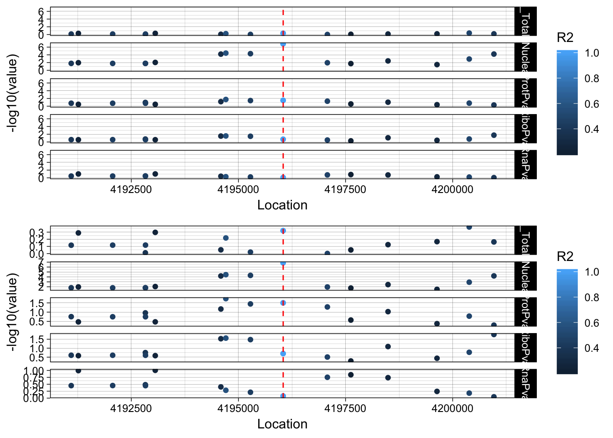
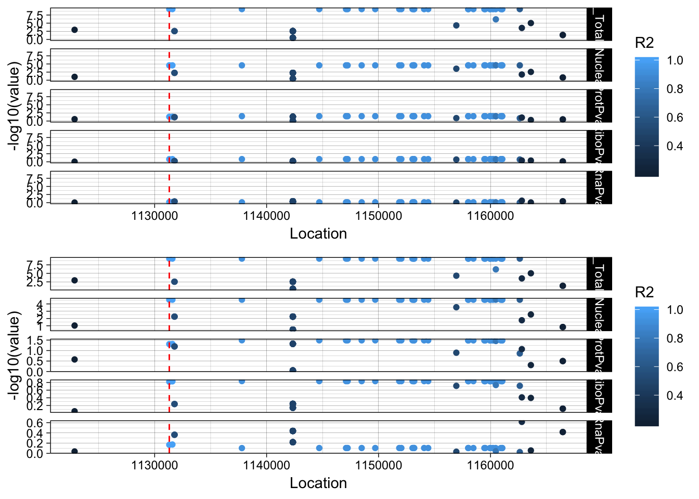
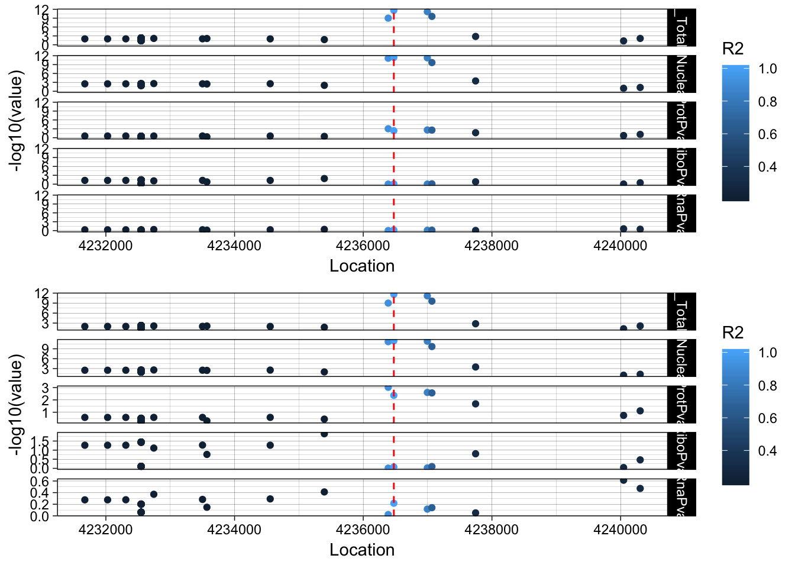
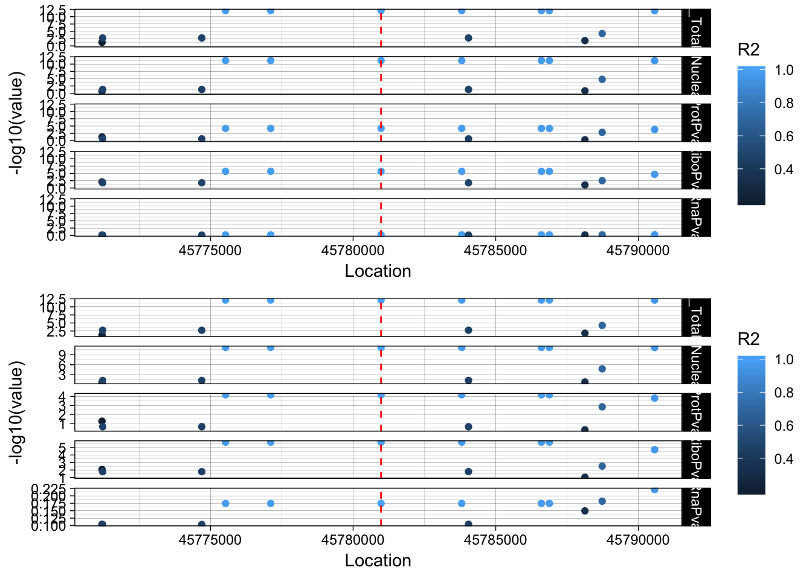

Last updated: 2018-11-19
workflowr checks: (Click a bullet for more information) ✔ R Markdown file: up-to-date
Great! Since the R Markdown file has been committed to the Git repository, you know the exact version of the code that produced these results.
✔ Environment: empty
Great job! The global environment was empty. Objects defined in the global environment can affect the analysis in your R Markdown file in unknown ways. For reproduciblity it’s best to always run the code in an empty environment.
✔ Seed:
set.seed(12345)
The command set.seed(12345) was run prior to running the code in the R Markdown file. Setting a seed ensures that any results that rely on randomness, e.g. subsampling or permutations, are reproducible.
✔ Session information: recorded
Great job! Recording the operating system, R version, and package versions is critical for reproducibility.
✔ Repository version: bac8c20
wflow_publish or wflow_git_commit). workflowr only checks the R Markdown file, but you know if there are other scripts or data files that it depends on. Below is the status of the Git repository when the results were generated:
Ignored files:
Ignored: .DS_Store
Ignored: .Rhistory
Ignored: .Rproj.user/
Ignored: data/.DS_Store
Ignored: output/.DS_Store
Untracked files:
Untracked: KalistoAbundance18486.txt
Untracked: analysis/ncbiRefSeq_sm.sort.mRNA.bed
Untracked: analysis/snake.config.notes.Rmd
Untracked: analysis/verifyBAM.Rmd
Untracked: data/18486.genecov.txt
Untracked: data/APApeaksYL.total.inbrain.bed
Untracked: data/ChromHmmOverlap/
Untracked: data/GM12878.chromHMM.bed
Untracked: data/GM12878.chromHMM.txt
Untracked: data/LocusZoom/
Untracked: data/NuclearApaQTLs.txt
Untracked: data/PeaksUsed/
Untracked: data/RNAkalisto/
Untracked: data/TotalApaQTLs.txt
Untracked: data/Totalpeaks_filtered_clean.bed
Untracked: data/YL-SP-18486-T-combined-genecov.txt
Untracked: data/YL-SP-18486-T_S9_R1_001-genecov.txt
Untracked: data/apaExamp/
Untracked: data/bedgraph_peaks/
Untracked: data/bin200.5.T.nuccov.bed
Untracked: data/bin200.Anuccov.bed
Untracked: data/bin200.nuccov.bed
Untracked: data/clean_peaks/
Untracked: data/comb_map_stats.csv
Untracked: data/comb_map_stats.xlsx
Untracked: data/comb_map_stats_39ind.csv
Untracked: data/combined_reads_mapped_three_prime_seq.csv
Untracked: data/diff_iso_trans/
Untracked: data/ensemble_to_genename.txt
Untracked: data/example_gene_peakQuant/
Untracked: data/filtered_APApeaks_merged_allchrom_refseqTrans.closest2End.bed
Untracked: data/filtered_APApeaks_merged_allchrom_refseqTrans.closest2End.noties.bed
Untracked: data/first50lines_closest.txt
Untracked: data/gencov.test.csv
Untracked: data/gencov.test.txt
Untracked: data/gencov_zero.test.csv
Untracked: data/gencov_zero.test.txt
Untracked: data/gene_cov/
Untracked: data/joined
Untracked: data/leafcutter/
Untracked: data/merged_combined_YL-SP-threeprimeseq.bg
Untracked: data/mol_overlap/
Untracked: data/mol_pheno/
Untracked: data/nom_QTL/
Untracked: data/nom_QTL_opp/
Untracked: data/nom_QTL_trans/
Untracked: data/nuc6up/
Untracked: data/other_qtls/
Untracked: data/peakPerRefSeqGene/
Untracked: data/perm_QTL/
Untracked: data/perm_QTL_opp/
Untracked: data/perm_QTL_trans/
Untracked: data/reads_mapped_three_prime_seq.csv
Untracked: data/smash.cov.results.bed
Untracked: data/smash.cov.results.csv
Untracked: data/smash.cov.results.txt
Untracked: data/smash_testregion/
Untracked: data/ssFC200.cov.bed
Untracked: data/temp.file1
Untracked: data/temp.file2
Untracked: data/temp.gencov.test.txt
Untracked: data/temp.gencov_zero.test.txt
Untracked: output/picard/
Untracked: output/plots/
Untracked: output/qual.fig2.pdf
Unstaged changes:
Modified: analysis/28ind.peak.explore.Rmd
Modified: analysis/39indQC.Rmd
Modified: analysis/apaQTLoverlapGWAS.Rmd
Modified: analysis/cleanupdtseq.internalpriming.Rmd
Modified: analysis/coloc_apaQTLs_protQTLs.Rmd
Modified: analysis/dif.iso.usage.leafcutter.Rmd
Modified: analysis/diff_iso_pipeline.Rmd
Modified: analysis/explore.filters.Rmd
Modified: analysis/flash2mash.Rmd
Modified: analysis/overlapMolQTL.Rmd
Modified: analysis/overlap_qtls.Rmd
Modified: analysis/peakOverlap_oppstrand.Rmd
Modified: analysis/pheno.leaf.comb.Rmd
Modified: analysis/swarmPlots_QTLs.Rmd
Modified: analysis/test.max2.Rmd
Modified: code/Snakefile
| File | Version | Author | Date | Message |
|---|---|---|---|---|
| Rmd | bac8c20 | Briana Mittleman | 2018-11-19 | export files for locus zoom site |
| html | 0940e7c | Briana Mittleman | 2018-11-16 | Build site. |
| Rmd | a856d09 | Briana Mittleman | 2018-11-16 | fix format |
| html | 410f25c | Briana Mittleman | 2018-11-16 | Build site. |
| Rmd | eca9b13 | Briana Mittleman | 2018-11-16 | add samcl1 |
| html | b2b7368 | Briana Mittleman | 2018-11-16 | Build site. |
| Rmd | 4fb0d81 | Briana Mittleman | 2018-11-16 | add more examples |
| html | 617a3b7 | Briana Mittleman | 2018-11-15 | Build site. |
| Rmd | e79d21a | Briana Mittleman | 2018-11-15 | add LD color to plot |
| html | 813a500 | Briana Mittleman | 2018-11-15 | Build site. |
| Rmd | 23c62c9 | Briana Mittleman | 2018-11-15 | add locus zoom initial analysis |
In this analysis I will create locus zoom plots for the example QTLs that look to be associated in APA and protein but not in RNA.
I will first do this for the EIF2A totalAPA example. peak228606, 3:150302010.
To run this analysis, I will need the nominal pvalues for this peak/gene. I can then plot the snp location against the pvalue. After I have this working, I can add the r2 values.
EIF2A==ENSG00000144895
grep EIF2A /project2/gilad/briana/genome_anotation_data/ensemble_to_genename.txt
grep peak228606 /project2/gilad/briana/threeprimeseq/data/nominal_APAqtl_trans/filtered_APApeaks_merged_allchrom_refseqGenes_pheno_Total_NomRes.txt > /project2/gilad/briana/threeprimeseq/data/LocusZoom/TotalAPA.peak228606.EIF2A.nomTotal.txt
grep ENSG00000144895 /project2/gilad/briana/threeprimeseq/data/molecular_QTLs/nom/fastqtl_qqnorm_RNAseq_phase2.fixed.nominal.out > /project2/gilad/briana/threeprimeseq/data/LocusZoom/RNA.EIF2A.nomTotal.txt
grep ENSG00000144895 /project2/gilad/briana/threeprimeseq/data/molecular_QTLs/nom/fastqtl_qqnorm_prot.fixed.nominal.out > /project2/gilad/briana/threeprimeseq/data/LocusZoom/Prot.EIF2A.nomTotal.txt
grep ENSG00000144895 /project2/gilad/briana/threeprimeseq/data/molecular_QTLs/nom/fastqtl_qqnorm_ribo_phase2.fixed.nominal.out > /project2/gilad/briana/threeprimeseq/data/LocusZoom/Ribo.EIF2A.nomTotal.txt
FastQTL results for nominal: * phenoID
SID
Distance
Nominal Pval
Slope
Librarys
library(workflowr)This is workflowr version 1.1.1
Run ?workflowr for help getting startedlibrary(reshape2)
library(tidyverse)── Attaching packages ───────────────────────────────────────────────────────── tidyverse 1.2.1 ──✔ ggplot2 3.0.0 ✔ purrr 0.2.5
✔ tibble 1.4.2 ✔ dplyr 0.7.6
✔ tidyr 0.8.1 ✔ stringr 1.3.1
✔ readr 1.1.1 ✔ forcats 0.3.0── Conflicts ──────────────────────────────────────────────────────────── tidyverse_conflicts() ──
✖ dplyr::filter() masks stats::filter()
✖ dplyr::lag() masks stats::lag()library(VennDiagram)Loading required package: gridLoading required package: futile.loggerlibrary(data.table)
Attaching package: 'data.table'The following objects are masked from 'package:dplyr':
between, first, lastThe following object is masked from 'package:purrr':
transposeThe following objects are masked from 'package:reshape2':
dcast, meltlibrary(ggpubr)Loading required package: magrittr
Attaching package: 'magrittr'The following object is masked from 'package:purrr':
set_namesThe following object is masked from 'package:tidyr':
extract
Attaching package: 'ggpubr'The following object is masked from 'package:VennDiagram':
rotatelibrary(cowplot)
Attaching package: 'cowplot'The following object is masked from 'package:ggpubr':
get_legendThe following object is masked from 'package:ggplot2':
ggsaveAPA=read.table("../data/LocusZoom/TotalAPA.peak228606.EIF2A.nomTotal.txt", stringsAsFactors = F, col.names = c("PeakID", "SID", "Dist", "APAPval","slope")) %>% separate(SID, into=c("Chrom", "Location"), sep=":") %>% select( Location, APAPval)
APA$Location=as.integer(APA$Location)
Prot=read.table("../data/LocusZoom/Prot.EIF2A.nomTotal.txt", stringsAsFactors = F, col.names = c("PeakID", "SID", "Dist", "ProtPval","slope")) %>% separate(SID, into=c("Chrom", "Location"), sep=":")%>% select( Location, ProtPval)
Prot$Location=as.integer(Prot$Location)
RNA=read.table("../data/LocusZoom/RNA.EIF2A.nomTotal.txt", stringsAsFactors = F, col.names = c("PeakID", "SID", "Dist", "RnaPval","slope")) %>% separate(SID, into=c("Chrom", "Location"), sep=":")%>% select( Location, RnaPval)
RNA$Location=as.integer(RNA$Location)
Ribo=read.table("../data/LocusZoom/Ribo.EIF2A.nomTotal.txt", stringsAsFactors = F, col.names = c("PeakID", "SID", "Dist", "RiboPval","slope")) %>% separate(SID, into=c("Chrom", "Location"), sep=":")%>% select( Location, RiboPval)
Ribo$Location=as.integer(Ribo$Location)I can join these by the snps that are tested for all three.
allPheno=APA %>% inner_join(Prot, by="Location") %>% inner_join(Ribo, by="Location") %>% inner_join(RNA, by="Location")First I can just plot these as is and see what happens:
allPhen_melt= melt(allPheno, id.vars="Location")ggplot(allPhen_melt,aes(x=Location, y=value)) + geom_point() + facet_grid( rows=vars(variable))
| Version | Author | Date |
|---|---|---|
| b2b7368 | Briana Mittleman | 2018-11-16 |
| 813a500 | Briana Mittleman | 2018-11-15 |
I need to zoom in around my locus 150302010
allPheno_filt=allPheno %>% filter(Location> 150297010 & Location < 150307010)
allPhen_filt_melt= melt(allPheno_filt, id.vars="Location")
ggplot(allPhen_filt_melt,aes(x=Location, y=-log10(value))) + geom_point() + facet_grid( rows=vars(variable)) + geom_vline(xintercept=150302010, linetype="dashed", color = "red") + theme(axis.line=element_line()) + theme(panel.grid.major = element_line("lightgray",0.25), panel.grid.minor = element_line("lightgray",0.25)) + labs(x="Chromosome 3 Location", y="-Log 10 Pvalue", title="Locus Zoom for EIF2A:peak228606")
| Version | Author | Date |
|---|---|---|
| b2b7368 | Briana Mittleman | 2018-11-16 |
| 813a500 | Briana Mittleman | 2018-11-15 |
Plot each seperatly because power is different.
ggplot(allPhen_filt_melt,aes(x=Location, y=-log10(value))) + geom_point() + facet_grid( rows=vars(variable),scales="free") + geom_vline(xintercept=150302010, linetype="dashed", color = "red") + theme(axis.line=element_line()) + theme(panel.grid.major = element_line("lightgray",0.25), panel.grid.minor = element_line("lightgray",0.25)) + labs(x="Chromosome 3 Location", y="-Log 10 Pvalue", title="Locus Zoom for EIF2A:peak228606")
| Version | Author | Date |
|---|---|---|
| b2b7368 | Briana Mittleman | 2018-11-16 |
The next step is to add the LD structure. I can do this with PLINK and the files I made for the GWAS overlap.
RunPlink_EIF2A.sh
#!/bin/bash
#SBATCH --job-name=RunPlink_EIF2A
#SBATCH --account=pi-yangili1
#SBATCH --time=36:00:00
#SBATCH --output=RunPlink_EIF2A.out
#SBATCH --error=RunPlink_EIF2A.err
#SBATCH --partition=broadwl
#SBATCH --mem=30G
#SBATCH --mail-type=END
module load plink
plink --ped /project2/gilad/briana/YRI_geno_hg19/plinkYRIgeno_chr3.ped --map /project2/gilad/briana/YRI_geno_hg19/plinkYRIgeno_chr3.map --r2 --ld-snp 3:150302010 --ld-window-kb 1000 --ld-window 99999 --out /project2/gilad/briana/threeprimeseq/data/LocusZoom/EIF2A_leadsnp.txtLD_structure=read.table("../data/LocusZoom/EIF2A_leadsnp.txt.ld", header=T) %>% select(BP_B, R2)
colnames(LD_structure)=c("Location", "R2")
allPheno_filt2=allPheno %>% filter(Location> 150292010 & Location < 150312010)
allPheno_filt_LD=allPheno_filt2 %>% inner_join(LD_structure, by="Location")
allPheno_filt_LD_melt=melt(allPheno_filt_LD, id.vars=c("Location", "R2"))lockedscale=ggplot(allPheno_filt_LD_melt, aes(x=Location, y=-log10(value), col=R2)) + geom_point() + facet_grid( rows=vars(variable)) + geom_vline(xintercept=150302010, linetype="dashed", color = "red") + theme_linedraw()
freescale=ggplot(allPheno_filt_LD_melt, aes(x=Location, y=-log10(value), col=R2)) + geom_point() + facet_grid( rows=vars(variable), scales = "free") + geom_vline(xintercept=150302010, linetype="dashed", color = "red") + theme_linedraw()plot_grid(lockedscale,freescale, align = "v", ncol=1)
| Version | Author | Date |
|---|---|---|
| b2b7368 | Briana Mittleman | 2018-11-16 |
Try on the same plot:
ggplot(allPheno_filt_LD_melt, aes(x=Location, y=-log10(value), col=variable, by =variable)) + geom_point() + geom_vline(xintercept=150302010, linetype="dashed", color = "red") + theme_linedraw()
| Version | Author | Date |
|---|---|---|
| b2b7368 | Briana Mittleman | 2018-11-16 |
rs14434 https://www.ncbi.nlm.nih.gov/variation/view/?q=rs14434&assm=GCF_000001405.33
RINT1 is a nuclear QTL. peak303436 7:105155320 ENSG00000135249
grep peak303436 /project2/gilad/briana/threeprimeseq/data/nominal_APAqtl_trans/filtered_APApeaks_merged_allchrom_refseqGenes_pheno_Nuclear_NomRes.txt > /project2/gilad/briana/threeprimeseq/data/LocusZoom/TotalAPA.peak303436.RINT1.nomNuc.txt
grep peak303436 /project2/gilad/briana/threeprimeseq/data/nominal_APAqtl_trans/filtered_APApeaks_merged_allchrom_refseqGenes_pheno_Total_NomRes.txt > /project2/gilad/briana/threeprimeseq/data/LocusZoom/TotalAPA.peak303436.RINT1.nomTotal.txt
grep ENSG00000135249 /project2/gilad/briana/threeprimeseq/data/molecular_QTLs/nom/fastqtl_qqnorm_RNAseq_phase2.fixed.nominal.out > /project2/gilad/briana/threeprimeseq/data/LocusZoom/RNA.RINT1.nomTotal.txt
grep ENSG00000135249 /project2/gilad/briana/threeprimeseq/data/molecular_QTLs/nom/fastqtl_qqnorm_prot.fixed.nominal.out > /project2/gilad/briana/threeprimeseq/data/LocusZoom/Prot.RINT1.nomTotal.txt
grep ENSG00000135249 /project2/gilad/briana/threeprimeseq/data/molecular_QTLs/nom/fastqtl_qqnorm_ribo_phase2.fixed.nominal.out > /project2/gilad/briana/threeprimeseq/data/LocusZoom/Ribo.RINT1.nomTotal.txt
RunPlink_RINT1.sh
#!/bin/bash
#SBATCH --job-name=RunPlink_RINT1
#SBATCH --account=pi-yangili1
#SBATCH --time=36:00:00
#SBATCH --output=RunPlink_RINT1.out
#SBATCH --error=RunPlink_RINT1.err
#SBATCH --partition=broadwl
#SBATCH --mem=30G
#SBATCH --mail-type=END
module load plink
plink --ped /project2/gilad/briana/YRI_geno_hg19/plinkYRIgeno_chr7.ped --map /project2/gilad/briana/YRI_geno_hg19/plinkYRIgeno_chr7.map --r2 --ld-snp 7:105155320 --ld-window-kb 1000 --ld-window 99999 --out /project2/gilad/briana/threeprimeseq/data/LocusZoom/RINT1_leadsnpAPA_Total_RINT1=read.table("../data/LocusZoom/TotalAPA.peak303436.RINT1.nomTotal.txt", stringsAsFactors = F, col.names = c("PeakID", "SID", "Dist", "APA_TotalPval","slope")) %>% separate(SID, into=c("Chrom", "Location"), sep=":") %>% select( Location, APA_TotalPval)
APA_Total_RINT1$Location=as.integer(APA_Total_RINT1$Location)
APA_Nuclear_RINT1=read.table("../data/LocusZoom/TotalAPA.peak303436.RINT1.nomNuc.txt", stringsAsFactors = F, col.names = c("PeakID", "SID", "Dist", "APA_NuclearPval","slope")) %>% separate(SID, into=c("Chrom", "Location"), sep=":") %>% select( Location, APA_NuclearPval)
APA_Nuclear_RINT1$Location=as.integer(APA_Nuclear_RINT1$Location)
Prot_RINT1=read.table("../data/LocusZoom/Prot.RINT1.nomTotal.txt", stringsAsFactors = F, col.names = c("PeakID", "SID", "Dist", "ProtPval","slope")) %>% separate(SID, into=c("Chrom", "Location"), sep=":")%>% select( Location, ProtPval)
Prot_RINT1$Location=as.integer(Prot_RINT1$Location)
RNA_RINT1=read.table("../data/LocusZoom/RNA.RINT1.nomTotal.txt", stringsAsFactors = F, col.names = c("PeakID", "SID", "Dist", "RnaPval","slope")) %>% separate(SID, into=c("Chrom", "Location"), sep=":")%>% select( Location, RnaPval)
RNA_RINT1$Location=as.integer(RNA_RINT1$Location)
Ribo_RINT1=read.table("../data/LocusZoom/Ribo.RINT1.nomTotal.txt", stringsAsFactors = F, col.names = c("PeakID", "SID", "Dist", "RiboPval","slope")) %>% separate(SID, into=c("Chrom", "Location"), sep=":")%>% select( Location, RiboPval)
Ribo_RINT1$Location=as.integer(Ribo_RINT1$Location)
LD_structure_RINT1=read.table("../data/LocusZoom/RINT1_leadsnp.ld", header=T) %>% select(BP_B, R2)
colnames(LD_structure_RINT1)=c("Location", "R2")I can join these by the snps that are tested for all three. Filter 1kb up and downstream
allPheno_RINT1=APA_Total_RINT1 %>% inner_join(APA_Nuclear_RINT1, by="Location") %>% inner_join(Prot_RINT1, by="Location") %>% inner_join(Ribo_RINT1, by="Location") %>% inner_join(RNA_RINT1, by="Location") %>% inner_join(LD_structure_RINT1, by="Location") %>% filter(Location> 105154320 & Location < 105156320)
allPheno_RINT1_melt=melt(allPheno_RINT1, id.vars=c("Location", "R2"))
lockedscale_RINT1=ggplot(allPheno_RINT1_melt, aes(x=Location, y=-log10(value), col=R2)) + geom_point() + facet_grid( rows=vars(variable)) + geom_vline(xintercept=105155320, linetype="dashed", color = "red") + theme_linedraw()
freescale_RINT1=ggplot(allPheno_RINT1_melt, aes(x=Location, y=-log10(value), col=R2)) + geom_point() + facet_grid( rows=vars(variable), scales = "free") + geom_vline(xintercept=105155320, linetype="dashed", color = "red") + theme_linedraw()
plot_grid(lockedscale_RINT1,freescale_RINT1, align = "v", ncol=1)
| Version | Author | Date |
|---|---|---|
| b2b7368 | Briana Mittleman | 2018-11-16 |
rs2463632 (7:105155320): it is an intronic variant in PUS7
PUS7 chr7:105,080,108-105,162,714 RINT1 chr7:105,172,532-105,208,124
This snp is in the intron on the gene directly upstream of RINT1.
This is a nuclear QTL as well. peak235215 4:4196045 ENSG00000145220
RunLocusZoom_LYAR.sh
#!/bin/bash
#SBATCH --job-name=RunLocusZoom_LYAR
#SBATCH --account=pi-yangili1
#SBATCH --time=36:00:00
#SBATCH --output=RunLocusZoom_LYAR.out
#SBATCH --error=RunLocusZoom_LYAR.err
#SBATCH --partition=broadwl
#SBATCH --mem=30G
#SBATCH --mail-type=END
module load plink
grep peak235215 /project2/gilad/briana/threeprimeseq/data/nominal_APAqtl_trans/filtered_APApeaks_merged_allchrom_refseqGenes_pheno_Nuclear_NomRes.txt > /project2/gilad/briana/threeprimeseq/data/LocusZoom/NuclearAPA.peak303436.LYAR.nomNuc.txt
grep peak235215 /project2/gilad/briana/threeprimeseq/data/nominal_APAqtl_trans/filtered_APApeaks_merged_allchrom_refseqGenes_pheno_Total_NomRes.txt > /project2/gilad/briana/threeprimeseq/data/LocusZoom/TotalAPA.peak303436.LYAR.nomTotal.txt
grep ENSG00000145220 /project2/gilad/briana/threeprimeseq/data/molecular_QTLs/nom/fastqtl_qqnorm_RNAseq_phase2.fixed.nominal.out > /project2/gilad/briana/threeprimeseq/data/LocusZoom/RNA.LYAR.nomTotal.txt
grep ENSG00000145220 /project2/gilad/briana/threeprimeseq/data/molecular_QTLs/nom/fastqtl_qqnorm_prot.fixed.nominal.out > /project2/gilad/briana/threeprimeseq/data/LocusZoom/Prot.LYAR.nomTotal.txt
grep ENSG00000145220 /project2/gilad/briana/threeprimeseq/data/molecular_QTLs/nom/fastqtl_qqnorm_ribo_phase2.fixed.nominal.out > /project2/gilad/briana/threeprimeseq/data/LocusZoom/Ribo.LYAR.nomTotal.txt
plink --ped /project2/gilad/briana/YRI_geno_hg19/plinkYRIgeno_chr4.ped --map /project2/gilad/briana/YRI_geno_hg19/plinkYRIgeno_chr4.map --r2 --ld-snp 4:4196045 --ld-window-kb 1000 --ld-window 99999 --out /project2/gilad/briana/threeprimeseq/data/LocusZoom/LYAR_leadsnp.txtMove to my computer:
APA_Total_LYAR=read.table("../data/LocusZoom/TotalAPA.peak303436.LYAR.nomTotal.txt", stringsAsFactors = F, col.names = c("PeakID", "SID", "Dist", "APA_TotalPval","slope")) %>% separate(SID, into=c("Chrom", "Location"), sep=":") %>% select( Location, APA_TotalPval)
APA_Total_LYAR$Location=as.integer(APA_Total_LYAR$Location)
APA_Nuclear_LYAR=read.table("../data/LocusZoom/NuclearAPA.peak303436.LYAR.nomNuc.txt", stringsAsFactors = F, col.names = c("PeakID", "SID", "Dist", "APA_NuclearPval","slope")) %>% separate(SID, into=c("Chrom", "Location"), sep=":") %>% select( Location, APA_NuclearPval)
APA_Nuclear_LYAR$Location=as.integer(APA_Nuclear_LYAR$Location)
Prot_LYAR=read.table("../data/LocusZoom/Prot.LYAR.nomTotal.txt", stringsAsFactors = F, col.names = c("PeakID", "SID", "Dist", "ProtPval","slope")) %>% separate(SID, into=c("Chrom", "Location"), sep=":")%>% select( Location, ProtPval)
Prot_LYAR$Location=as.integer(Prot_LYAR$Location)
RNA_LYAR=read.table("../data/LocusZoom/RNA.LYAR.nomTotal.txt", stringsAsFactors = F, col.names = c("PeakID", "SID", "Dist", "RnaPval","slope")) %>% separate(SID, into=c("Chrom", "Location"), sep=":")%>% select( Location, RnaPval)
RNA_LYAR$Location=as.integer(RNA_LYAR$Location)
Ribo_LYAR=read.table("../data/LocusZoom/Ribo.LYAR.nomTotal.txt", stringsAsFactors = F, col.names = c("PeakID", "SID", "Dist", "RiboPval","slope")) %>% separate(SID, into=c("Chrom", "Location"), sep=":")%>% select( Location, RiboPval)
Ribo_LYAR$Location=as.integer(Ribo_LYAR$Location)
LD_structure_LYAR=read.table("../data/LocusZoom/LYAR_leadsnp.txt.ld", header=T) %>% select(BP_B, R2)
colnames(LD_structure_LYAR)=c("Location", "R2")
allPheno_LYAR=APA_Total_LYAR %>% inner_join(APA_Nuclear_LYAR, by="Location") %>% inner_join(Prot_LYAR, by="Location") %>% inner_join(Ribo_LYAR, by="Location") %>% inner_join(RNA_LYAR, by="Location") %>% inner_join(LD_structure_LYAR, by="Location") %>% filter(Location> 4191045 & Location < 4201045)
allPheno_LYAR_melt=melt(allPheno_LYAR, id.vars=c("Location", "R2"))
lockedscale_LYAR=ggplot(allPheno_LYAR_melt, aes(x=Location, y=-log10(value), col=R2)) + geom_point() + facet_grid( rows=vars(variable)) + geom_vline(xintercept=4196045, linetype="dashed", color = "red") + theme_linedraw()
freescale_LYAR=ggplot(allPheno_LYAR_melt, aes(x=Location, y=-log10(value), col=R2)) + geom_point() + facet_grid( rows=vars(variable), scales = "free") + geom_vline(xintercept=4196045, linetype="dashed", color = "red") + theme_linedraw()
plot_grid(lockedscale_LYAR,freescale_LYAR, align = "v", ncol=1)
| Version | Author | Date |
|---|---|---|
| b2b7368 | Briana Mittleman | 2018-11-16 |
Snp is in an intron OTOP1 gene 2 genes upstream. rs7682186
Total QTL peak193648 20:1131308 ENSG00000125818
RunLocusZoom_PSMF1.sh
#!/bin/bash
#SBATCH --job-name=RunLocusZoom_PSMF1
#SBATCH --account=pi-yangili1
#SBATCH --time=36:00:00
#SBATCH --output=RunLocusZoom_PSMF1.out
#SBATCH --error=RunLocusZoom_PSMF1.err
#SBATCH --partition=broadwl
#SBATCH --mem=30G
#SBATCH --mail-type=END
module load plink
grep peak193648 /project2/gilad/briana/threeprimeseq/data/nominal_APAqtl_trans/filtered_APApeaks_merged_allchrom_refseqGenes_pheno_Nuclear_NomRes.txt > /project2/gilad/briana/threeprimeseq/data/LocusZoom/NuclearAPA.peak193648.PSMF1.nomNuc.txt
grep peak193648 /project2/gilad/briana/threeprimeseq/data/nominal_APAqtl_trans/filtered_APApeaks_merged_allchrom_refseqGenes_pheno_Total_NomRes.txt > /project2/gilad/briana/threeprimeseq/data/LocusZoom/TotalAPA.peak193648.PSMF1.nomTotal.txt
grep ENSG00000125818 /project2/gilad/briana/threeprimeseq/data/molecular_QTLs/nom/fastqtl_qqnorm_RNAseq_phase2.fixed.nominal.out > /project2/gilad/briana/threeprimeseq/data/LocusZoom/RNA.PSMF1.nomTotal.txt
grep ENSG00000125818 /project2/gilad/briana/threeprimeseq/data/molecular_QTLs/nom/fastqtl_qqnorm_prot.fixed.nominal.out > /project2/gilad/briana/threeprimeseq/data/LocusZoom/Prot.PSMF1.nomTotal.txt
grep ENSG00000125818 /project2/gilad/briana/threeprimeseq/data/molecular_QTLs/nom/fastqtl_qqnorm_ribo_phase2.fixed.nominal.out > /project2/gilad/briana/threeprimeseq/data/LocusZoom/Ribo.PSMF1.nomTotal.txt
plink --ped /project2/gilad/briana/YRI_geno_hg19/plinkYRIgeno_chr20.ped --map /project2/gilad/briana/YRI_geno_hg19/plinkYRIgeno_chr20.map --r2 --ld-snp 20:1131308 --ld-window-kb 1000 --ld-window 99999 --out /project2/gilad/briana/threeprimeseq/data/LocusZoom/PSMF1_leadsnp.txtMove to computer
APA_Total_PSMF1=read.table("../data/LocusZoom/TotalAPA.peak193648.PSMF1.nomTotal.txt", stringsAsFactors = F, col.names = c("PeakID", "SID", "Dist", "APA_TotalPval","slope")) %>% separate(SID, into=c("Chrom", "Location"), sep=":") %>% select( Location, APA_TotalPval)
APA_Total_PSMF1$Location=as.integer(APA_Total_PSMF1$Location)
APA_Nuclear_PSMF1=read.table("../data/LocusZoom/NuclearAPA.peak193648.PSMF1.nomNuc.txt", stringsAsFactors = F, col.names = c("PeakID", "SID", "Dist", "APA_NuclearPval","slope")) %>% separate(SID, into=c("Chrom", "Location"), sep=":") %>% select( Location, APA_NuclearPval)
APA_Nuclear_PSMF1$Location=as.integer(APA_Nuclear_PSMF1$Location)
Prot_PSMF1=read.table("../data/LocusZoom/Prot.PSMF1.nomTotal.txt", stringsAsFactors = F, col.names = c("PeakID", "SID", "Dist", "ProtPval","slope")) %>% separate(SID, into=c("Chrom", "Location"), sep=":")%>% select( Location, ProtPval)
Prot_PSMF1$Location=as.integer(Prot_PSMF1$Location)
RNA_PSMF1=read.table("../data/LocusZoom/RNA.PSMF1.nomTotal.txt", stringsAsFactors = F, col.names = c("PeakID", "SID", "Dist", "RnaPval","slope")) %>% separate(SID, into=c("Chrom", "Location"), sep=":")%>% select( Location, RnaPval)
RNA_PSMF1$Location=as.integer(RNA_PSMF1$Location)
Ribo_PSMF1=read.table("../data/LocusZoom/Ribo.PSMF1.nomTotal.txt", stringsAsFactors = F, col.names = c("PeakID", "SID", "Dist", "RiboPval","slope")) %>% separate(SID, into=c("Chrom", "Location"), sep=":")%>% select( Location, RiboPval)
Ribo_PSMF1$Location=as.integer(Ribo_PSMF1$Location)
LD_structure_PSMF1=read.table("../data/LocusZoom/PSMF1_leadsnp.txt.ld", header=T) %>% select(BP_B, R2)
colnames(LD_structure_PSMF1)=c("Location", "R2")
allPheno_PSMF1=APA_Total_PSMF1 %>% inner_join(APA_Nuclear_PSMF1, by="Location") %>% inner_join(Prot_PSMF1, by="Location") %>% inner_join(Ribo_PSMF1, by="Location") %>% inner_join(RNA_PSMF1, by="Location") %>% inner_join(LD_structure_PSMF1, by="Location") %>% filter(Location> 1121308 & Location < 1181308)
allPheno_PSMF1_melt=melt(allPheno_PSMF1, id.vars=c("Location", "R2"))
lockedscale_PSMF1=ggplot(allPheno_PSMF1_melt, aes(x=Location, y=-log10(value),col=R2)) + geom_point() + facet_grid( rows=vars(variable)) + geom_vline(xintercept=1131308, linetype="dashed", color = "red") + theme_linedraw()
freescale_PSMF1=ggplot(allPheno_PSMF1_melt, aes(x=Location, y=-log10(value), col=R2)) + geom_point() + facet_grid( rows=vars(variable), scales = "free") + geom_vline(xintercept=1131308, linetype="dashed", color = "red") + theme_linedraw()
plot_grid(lockedscale_PSMF1,freescale_PSMF1, align = "v", ncol=1)
| Version | Author | Date |
|---|---|---|
| b2b7368 | Briana Mittleman | 2018-11-16 |
This varriant is in an intron of the PSMF1 gene. rs56398212
This is a total and a nuclear QTL peak152751, ENSG00000105246 19:4236475
RunLocusZoom_EBI3.sh
#!/bin/bash
#SBATCH --job-name=RunLocusZoom_EBI3
#SBATCH --account=pi-yangili1
#SBATCH --time=36:00:00
#SBATCH --output=RunLocusZoom_EBI3.out
#SBATCH --error=RunLocusZoom_EBI3.err
#SBATCH --partition=broadwl
#SBATCH --mem=30G
#SBATCH --mail-type=END
module load plink
grep peak152751 /project2/gilad/briana/threeprimeseq/data/nominal_APAqtl_trans/filtered_APApeaks_merged_allchrom_refseqGenes_pheno_Nuclear_NomRes.txt > /project2/gilad/briana/threeprimeseq/data/LocusZoom/NuclearAPA.peak152751.EBI3.nomNuc.txt
grep peak152751 /project2/gilad/briana/threeprimeseq/data/nominal_APAqtl_trans/filtered_APApeaks_merged_allchrom_refseqGenes_pheno_Total_NomRes.txt > /project2/gilad/briana/threeprimeseq/data/LocusZoom/TotalAPA.peak152751.EBI3.nomTotal.txt
grep ENSG00000105246 /project2/gilad/briana/threeprimeseq/data/molecular_QTLs/nom/fastqtl_qqnorm_RNAseq_phase2.fixed.nominal.out > /project2/gilad/briana/threeprimeseq/data/LocusZoom/RNA.EBI3.nomTotal.txt
grep ENSG00000105246 /project2/gilad/briana/threeprimeseq/data/molecular_QTLs/nom/fastqtl_qqnorm_prot.fixed.nominal.out > /project2/gilad/briana/threeprimeseq/data/LocusZoom/Prot.EBI3.nomTotal.txt
grep ENSG00000105246 /project2/gilad/briana/threeprimeseq/data/molecular_QTLs/nom/fastqtl_qqnorm_ribo_phase2.fixed.nominal.out > /project2/gilad/briana/threeprimeseq/data/LocusZoom/Ribo.EBI3.nomTotal.txt
plink --ped /project2/gilad/briana/YRI_geno_hg19/plinkYRIgeno_chr19.ped --map /project2/gilad/briana/YRI_geno_hg19/plinkYRIgeno_chr19.map --r2 --ld-snp 19:4236475 --ld-window-kb 1000 --ld-window 99999 --out /project2/gilad/briana/threeprimeseq/data/LocusZoom/EBI3_leadsnp.txtMove to comp
APA_Total_EBI3=read.table("../data/LocusZoom/TotalAPA.peak152751.EBI3.nomTotal.txt", stringsAsFactors = F, col.names = c("PeakID", "SID", "Dist", "APA_TotalPval","slope")) %>% separate(SID, into=c("Chrom", "Location"), sep=":") %>% select( Location, APA_TotalPval)
APA_Total_EBI3$Location=as.integer(APA_Total_EBI3$Location)
APA_Nuclear_EBI3=read.table("../data/LocusZoom/NuclearAPA.peak152751.EBI3.nomNuc.txt", stringsAsFactors = F, col.names = c("PeakID", "SID", "Dist", "APA_NuclearPval","slope")) %>% separate(SID, into=c("Chrom", "Location"), sep=":") %>% select( Location, APA_NuclearPval)
APA_Nuclear_EBI3$Location=as.integer(APA_Nuclear_EBI3$Location)
Prot_EBI3=read.table("../data/LocusZoom/Prot.EBI3.nomTotal.txt", stringsAsFactors = F, col.names = c("PeakID", "SID", "Dist", "ProtPval","slope")) %>% separate(SID, into=c("Chrom", "Location"), sep=":")%>% select( Location, ProtPval)
Prot_EBI3$Location=as.integer(Prot_EBI3$Location)
RNA_EBI3=read.table("../data/LocusZoom/RNA.EBI3.nomTotal.txt", stringsAsFactors = F, col.names = c("PeakID", "SID", "Dist", "RnaPval","slope")) %>% separate(SID, into=c("Chrom", "Location"), sep=":")%>% select( Location, RnaPval)
RNA_EBI3$Location=as.integer(RNA_EBI3$Location)
Ribo_EBI3=read.table("../data/LocusZoom/Ribo.EBI3.nomTotal.txt", stringsAsFactors = F, col.names = c("PeakID", "SID", "Dist", "RiboPval","slope")) %>% separate(SID, into=c("Chrom", "Location"), sep=":")%>% select( Location, RiboPval)
Ribo_EBI3$Location=as.integer(Ribo_EBI3$Location)
LD_structure_EBI3=read.table("../data/LocusZoom/EBI3_leadsnp.txt.ld", header=T) %>% select(BP_B, R2)
colnames(LD_structure_EBI3)=c("Location", "R2")
allPheno_EBI3=APA_Total_EBI3 %>% inner_join(APA_Nuclear_EBI3, by="Location") %>% inner_join(Prot_EBI3, by="Location") %>% inner_join(Ribo_EBI3, by="Location") %>% inner_join(RNA_EBI3, by="Location") %>% inner_join(LD_structure_EBI3, by="Location") %>% filter(Location> 4231475 & Location < 4241475)
allPheno_EBI3_melt=melt(allPheno_EBI3, id.vars=c("Location", "R2"))
lockedscale_EBI3=ggplot(allPheno_EBI3_melt, aes(x=Location, y=-log10(value),col=R2)) + geom_point() + facet_grid( rows=vars(variable)) + geom_vline(xintercept=4236475, linetype="dashed", color = "red") + theme_linedraw()
freescale_EBI3=ggplot(allPheno_EBI3_melt, aes(x=Location, y=-log10(value), col=R2)) + geom_point() + facet_grid( rows=vars(variable), scales = "free") + geom_vline(xintercept=4236475, linetype="dashed", color = "red") + theme_linedraw()
plot_grid(lockedscale_EBI3,freescale_EBI3, align = "v", ncol=1)
| Version | Author | Date |
|---|---|---|
| b2b7368 | Briana Mittleman | 2018-11-16 |
Snp is in the last intron of EBI3. It looks like the lead protien snp is the one directly upstream. rs353704. The region is CCCCAC. The preceeding SNP is rs353705. The relevent peak is 19:4236433:4236517. The snp is in the peak. This is interesting because the alternative allele decreases usage of this peak and the protein.
There are 3 QTLs in the total and nuclear for this. I am gonig to focus on the hit that has the same snp peak assocaition.
peak216086 3:45780980 ENSG00000211456
RunLocusZoom_SACM1L.sh
#!/bin/bash
#SBATCH --job-name=RunLocusZoom_SACM1L
#SBATCH --account=pi-yangili1
#SBATCH --time=36:00:00
#SBATCH --output=RunLocusZoom_SACM1L.out
#SBATCH --error=RunLocusZoom_SACM1L.err
#SBATCH --partition=broadwl
#SBATCH --mem=30G
#SBATCH --mail-type=END
module load plink
grep peak216086 /project2/gilad/briana/threeprimeseq/data/nominal_APAqtl_trans/filtered_APApeaks_merged_allchrom_refseqGenes_pheno_Nuclear_NomRes.txt > /project2/gilad/briana/threeprimeseq/data/LocusZoom/NuclearAPA.peak216086.SACM1L.nomNuc.txt
grep peak216086 /project2/gilad/briana/threeprimeseq/data/nominal_APAqtl_trans/filtered_APApeaks_merged_allchrom_refseqGenes_pheno_Total_NomRes.txt > /project2/gilad/briana/threeprimeseq/data/LocusZoom/TotalAPA.peak216086.SACM1L.nomTotal.txt
grep ENSG00000211456 /project2/gilad/briana/threeprimeseq/data/molecular_QTLs/nom/fastqtl_qqnorm_RNAseq_phase2.fixed.nominal.out > /project2/gilad/briana/threeprimeseq/data/LocusZoom/RNA.SACM1L.nomTotal.txt
grep ENSG00000211456 /project2/gilad/briana/threeprimeseq/data/molecular_QTLs/nom/fastqtl_qqnorm_prot.fixed.nominal.out > /project2/gilad/briana/threeprimeseq/data/LocusZoom/Prot.SACM1L.nomTotal.txt
grep ENSG00000211456 /project2/gilad/briana/threeprimeseq/data/molecular_QTLs/nom/fastqtl_qqnorm_ribo_phase2.fixed.nominal.out > /project2/gilad/briana/threeprimeseq/data/LocusZoom/Ribo.SACM1L.nomTotal.txt
plink --ped /project2/gilad/briana/YRI_geno_hg19/plinkYRIgeno_chr3.ped --map /project2/gilad/briana/YRI_geno_hg19/plinkYRIgeno_chr3.map --r2 --ld-snp 3:45780980 --ld-window-kb 1000 --ld-window 99999 --out /project2/gilad/briana/threeprimeseq/data/LocusZoom/SACM1L_leadsnp.txt.
Move to comp
APA_Total_SACM1L=read.table("../data/LocusZoom/TotalAPA.peak216086.SACM1L.nomTotal.txt", stringsAsFactors = F, col.names = c("PeakID", "SID", "Dist", "APA_TotalPval","slope")) %>% separate(SID, into=c("Chrom", "Location"), sep=":") %>% select( Location, APA_TotalPval)
APA_Total_SACM1L$Location=as.integer(APA_Total_SACM1L$Location)
APA_Nuclear_SACM1L=read.table("../data/LocusZoom/NuclearAPA.peak216086.SACM1L.nomNuc.txt", stringsAsFactors = F, col.names = c("PeakID", "SID", "Dist", "APA_NuclearPval","slope")) %>% separate(SID, into=c("Chrom", "Location"), sep=":") %>% select( Location, APA_NuclearPval)
APA_Nuclear_SACM1L$Location=as.integer(APA_Nuclear_SACM1L$Location)
Prot_SACM1L=read.table("../data/LocusZoom/Prot.SACM1L.nomTotal.txt", stringsAsFactors = F, col.names = c("PeakID", "SID", "Dist", "ProtPval","slope")) %>% separate(SID, into=c("Chrom", "Location"), sep=":")%>% select( Location, ProtPval)
Prot_SACM1L$Location=as.integer(Prot_SACM1L$Location)
RNA_SACM1L=read.table("../data/LocusZoom/RNA.SACM1L.nomTotal.txt", stringsAsFactors = F, col.names = c("PeakID", "SID", "Dist", "RnaPval","slope")) %>% separate(SID, into=c("Chrom", "Location"), sep=":")%>% select( Location, RnaPval)
RNA_SACM1L$Location=as.integer(RNA_SACM1L$Location)
Ribo_SACM1L=read.table("../data/LocusZoom/Ribo.SACM1L.nomTotal.txt", stringsAsFactors = F, col.names = c("PeakID", "SID", "Dist", "RiboPval","slope")) %>% separate(SID, into=c("Chrom", "Location"), sep=":")%>% select( Location, RiboPval)
Ribo_SACM1L$Location=as.integer(Ribo_SACM1L$Location)
LD_structure_SACM1L=read.table("../data/LocusZoom/SACM1L_leadsnp.txt.ld", header=T) %>% select(BP_B, R2)
colnames(LD_structure_SACM1L)=c("Location", "R2")
allPheno_SACM1L=APA_Total_SACM1L %>% inner_join(APA_Nuclear_SACM1L, by="Location") %>% inner_join(Prot_SACM1L, by="Location") %>% inner_join(Ribo_SACM1L, by="Location") %>% inner_join(RNA_SACM1L, by="Location") %>% inner_join(LD_structure_SACM1L, by="Location") %>% filter(Location> 45770980 & Location < 45790980)
allPheno_SACM1L_melt=melt(allPheno_SACM1L, id.vars=c("Location", "R2"))
lockedscale_SACM1L=ggplot(allPheno_SACM1L_melt, aes(x=Location, y=-log10(value),col=R2)) + geom_point() + facet_grid( rows=vars(variable)) + geom_vline(xintercept=45780980, linetype="dashed", color = "red") + theme_linedraw()
freescale_SACM1L=ggplot(allPheno_SACM1L_melt, aes(x=Location, y=-log10(value), col=R2)) + geom_point() + facet_grid( rows=vars(variable), scales = "free") + geom_vline(xintercept=45780980, linetype="dashed", color = "red") + theme_linedraw()
plot_grid(lockedscale_SACM1L,freescale_SACM1L, align = "v", ncol=1)
| Version | Author | Date |
|---|---|---|
| 410f25c | Briana Mittleman | 2018-11-16 |
The snp is in an intron of the SAMCL1 gene rs80065472. The peak is in the UTR of the gene.
APA_LZ=read.table("../data/LocusZoom/TotalAPA.peak228606.EIF2A.nomTotal.txt", stringsAsFactors = F, col.names = c("PeakID", "SNP", "Dist", "P","slope")) %>% select( SNP, P)
write.table(APA_LZ,"../data/LocusZoom/apaEIF21LZ.txt", col.names = T, row.names = F, quote = F)
#sed -e 's/^/Chr/' apaEIF21LZ.txt > apaEIF21LZ_chr.txt
prot_LZ=read.table("../data/LocusZoom/Prot.EIF2A.nomTotal.txt", stringsAsFactors = F, col.names = c("PeakID", "SNP", "Dist", "P","slope")) %>% select( SNP, P)
write.table(prot_LZ,"../data/LocusZoom/ProtEIF21LZ.txt", col.names = T, row.names = F, quote = F)
#sed -e 's/^/Chr/'ProtEIF21LZ.txt > ProtEIF21LZ_chr.txt
RNA_LZ=read.table("../data/LocusZoom/RNA.EIF2A.nomTotal.txt", stringsAsFactors = F, col.names = c("PeakID", "SNP", "Dist", "P","slope")) %>% select( SNP, P)
write.table(RNA_LZ,"../data/LocusZoom/RNAEIF21LZ.txt", col.names = T, row.names = F, quote = F)
#sed -e 's/^/Chr/' RNAEIF21LZ.txt > RNAEIF21LZ_chr.txt
ribo_LZ=read.table("../data/LocusZoom/Ribo.EIF2A.nomTotal.txt", stringsAsFactors = F, col.names = c("PeakID", "SNP", "Dist", "P","slope")) %>% select( SNP, P)
write.table(ribo_LZ,"../data/LocusZoom/RiboEIF21LZ.txt", col.names = T, row.names = F, quote = F)
#sed -e 's/^/Chr/' RiboEIF21LZ.txt > RiboEIF21LZ_chr.txtDo this for another qtl:
APATotal_SACM1L_LZ=read.table("../data/LocusZoom/TotalAPA.peak216086.SACM1L.nomTotal.txt", stringsAsFactors = F, col.names = c("PeakID", "SNP", "Dist", "P","slope")) %>% select( SNP, P)
write.table(APATotal_SACM1L_LZ,"../data/LocusZoom/apaTotalSACM1L_LZ.txt", col.names = T, row.names = F, quote = F)
APANuclear_SACM1L_LZ=read.table("../data/LocusZoom/NuclearAPA.peak216086.SACM1L.nomNuc.txt", stringsAsFactors = F, col.names = c("PeakID", "SNP", "Dist", "P","slope")) %>% select( SNP, P)
write.table(APANuclear_SACM1L_LZ,"../data/LocusZoom/apaNuclearSACM1L_LZ.txt", col.names = T, row.names = F, quote = F)
prot_SACM1L_LZ=read.table("../data/LocusZoom/Prot.SACM1L.nomTotal.txt", stringsAsFactors = F, col.names = c("PeakID", "SNP", "Dist", "P","slope")) %>% select( SNP, P)
write.table(prot_SACM1L_LZ,"../data/LocusZoom/ProtSACM1L_LZ.txt", col.names = T, row.names = F, quote = F)
#sed -e 's/^/Chr/'
RNA_SACM1L_LZ=read.table("../data/LocusZoom/RNA.SACM1L.nomTotal.txt", stringsAsFactors = F, col.names = c("PeakID", "SNP", "Dist", "P","slope")) %>% select( SNP, P)
write.table(RNA_SACM1L_LZ,"../data/LocusZoom/RNASACM1L_LZ.txt", col.names = T, row.names = F, quote = F)
#sed -e 's/^/Chr/'
ribo_SACM1L_LZ=read.table("../data/LocusZoom/Ribo.SACM1L.nomTotal.txt", stringsAsFactors = F, col.names = c("PeakID", "SNP", "Dist", "P","slope")) %>% select( SNP, P)
write.table(ribo_SACM1L_LZ,"../data/LocusZoom/RiboSACM1L_LZ.txt", col.names = T, row.names = F, quote = F)
#sed -e 's/^/Chr/' One more example: LYAR
APATotal_LYAR_LZ=read.table("../data/LocusZoom/TotalAPA.peak303436.LYAR.nomTotal.txt", stringsAsFactors = F, col.names = c("PeakID", "SNP", "Dist", "P","slope")) %>% select( SNP, P)
write.table(APATotal_LYAR_LZ,"../data/LocusZoom/apaTotalLYAR_LZ.txt", col.names = T, row.names = F, quote = F)
APANuclear_LYAR_LZ=read.table("../data/LocusZoom/NuclearAPA.peak303436.LYAR.nomNuc.txt", stringsAsFactors = F, col.names = c("PeakID", "SNP", "Dist", "P","slope")) %>% select( SNP, P)
write.table(APANuclear_LYAR_LZ,"../data/LocusZoom/apaNuclearLYAR_LZ.txt", col.names = T, row.names = F, quote = F)
prot_LYAR_LZ=read.table("../data/LocusZoom/Prot.LYAR.nomTotal.txt", stringsAsFactors = F, col.names = c("PeakID", "SNP", "Dist", "P","slope")) %>% select( SNP, P)
write.table(prot_LYAR_LZ,"../data/LocusZoom/ProtLYAR_LZ.txt", col.names = T, row.names = F, quote = F)
#sed -e 's/^/Chr/'
RNA_LYAR_LZ=read.table("../data/LocusZoom/RNA.LYAR.nomTotal.txt", stringsAsFactors = F, col.names = c("PeakID", "SNP", "Dist", "P","slope")) %>% select( SNP, P)
write.table(RNA_LYAR_LZ,"../data/LocusZoom/RNALYAR_LZ.txt", col.names = T, row.names = F, quote = F)
#sed -e 's/^/Chr/'
ribo_LYAR_LZ=read.table("../data/LocusZoom/Ribo.LYAR.nomTotal.txt", stringsAsFactors = F, col.names = c("PeakID", "SNP", "Dist", "P","slope")) %>% select( SNP, P)
write.table(ribo_LYAR_LZ,"../data/LocusZoom/RiboLYAR_LZ.txt", col.names = T, row.names = F, quote = F)
#sed -e 's/^/Chr/' RINT1
APATotal_RINT1_LZ=read.table("../data/LocusZoom/TotalAPA.peak303436.RINT1.nomTotal.txt", stringsAsFactors = F, col.names = c("PeakID", "SNP", "Dist", "P","slope")) %>% select( SNP, P)
write.table(APATotal_RINT1_LZ,"../data/LocusZoom/apaTotalRINT1_LZ.txt", col.names = T, row.names = F, quote = F)
APANuclear_RINT1_LZ=read.table("../data/LocusZoom/TotalAPA.peak303436.RINT1.nomNuc.txt", stringsAsFactors = F, col.names = c("PeakID", "SNP", "Dist", "P","slope")) %>% select( SNP, P)
write.table(APANuclear_RINT1_LZ,"../data/LocusZoom/apaNuclearRINT1_LZ.txt", col.names = T, row.names = F, quote = F)
prot_RINT1_LZ=read.table("../data/LocusZoom/Prot.RINT1.nomTotal.txt", stringsAsFactors = F, col.names = c("PeakID", "SNP", "Dist", "P","slope")) %>% select( SNP, P)
write.table(prot_RINT1_LZ,"../data/LocusZoom/ProtRINT1_LZ.txt", col.names = T, row.names = F, quote = F)
#sed -e 's/^/Chr/'
RNA_RINT1_LZ=read.table("../data/LocusZoom/RNA.RINT1.nomTotal.txt", stringsAsFactors = F, col.names = c("PeakID", "SNP", "Dist", "P","slope")) %>% select( SNP, P)
write.table(RNA_RINT1_LZ,"../data/LocusZoom/RNARINT1_LZ.txt", col.names = T, row.names = F, quote = F)
#sed -e 's/^/Chr/'
ribo_RINT1_LZ=read.table("../data/LocusZoom/Ribo.RINT1.nomTotal.txt", stringsAsFactors = F, col.names = c("PeakID", "SNP", "Dist", "P","slope")) %>% select( SNP, P)
write.table(ribo_RINT1_LZ,"../data/LocusZoom/RiboRINT1_LZ.txt", col.names = T, row.names = F, quote = F)
#sed -e 's/^/Chr/' EBI3 rs353704.
APATotal_EBI3_LZ=read.table("../data/LocusZoom/TotalAPA.peak152751.EBI3.nomTotal.txt", stringsAsFactors = F, col.names = c("PeakID", "SNP", "Dist", "P","slope")) %>% select( SNP, P)
write.table(APATotal_EBI3_LZ,"../data/LocusZoom/apaTotalEBI3_LZ.txt", col.names = T, row.names = F, quote = F)
APANuclear_EBI3_LZ=read.table("../data/LocusZoom/NuclearAPA.peak152751.EBI3.nomNuc.txt", stringsAsFactors = F, col.names = c("PeakID", "SNP", "Dist", "P","slope")) %>% select( SNP, P)
write.table(APANuclear_EBI3_LZ,"../data/LocusZoom/apaNuclearEBI3_LZ.txt", col.names = T, row.names = F, quote = F)
prot_EBI3_LZ=read.table("../data/LocusZoom/Prot.EBI3.nomTotal.txt", stringsAsFactors = F, col.names = c("PeakID", "SNP", "Dist", "P","slope")) %>% select( SNP, P)
write.table(prot_EBI3_LZ,"../data/LocusZoom/ProtEBI3_LZ.txt", col.names = T, row.names = F, quote = F)
#sed -e 's/^/Chr/'
RNA_EBI3_LZ=read.table("../data/LocusZoom/RNA.EBI3.nomTotal.txt", stringsAsFactors = F, col.names = c("PeakID", "SNP", "Dist", "P","slope")) %>% select( SNP, P)
write.table(RNA_EBI3_LZ,"../data/LocusZoom/RNAEBI3_LZ.txt", col.names = T, row.names = F, quote = F)
#sed -e 's/^/Chr/'
ribo_EBI3_LZ=read.table("../data/LocusZoom/Ribo.EBI3.nomTotal.txt", stringsAsFactors = F, col.names = c("PeakID", "SNP", "Dist", "P","slope")) %>% select( SNP, P)
write.table(ribo_EBI3_LZ,"../data/LocusZoom/RiboEBI3_LZ.txt", col.names = T, row.names = F, quote = F)
#sed -e 's/^/Chr/' sessionInfo()R version 3.5.1 (2018-07-02)
Platform: x86_64-apple-darwin15.6.0 (64-bit)
Running under: macOS Sierra 10.12.6
Matrix products: default
BLAS: /Library/Frameworks/R.framework/Versions/3.5/Resources/lib/libRblas.0.dylib
LAPACK: /Library/Frameworks/R.framework/Versions/3.5/Resources/lib/libRlapack.dylib
locale:
[1] en_US.UTF-8/en_US.UTF-8/en_US.UTF-8/C/en_US.UTF-8/en_US.UTF-8
attached base packages:
[1] grid stats graphics grDevices utils datasets methods
[8] base
other attached packages:
[1] bindrcpp_0.2.2 cowplot_0.9.3 ggpubr_0.1.8
[4] magrittr_1.5 data.table_1.11.8 VennDiagram_1.6.20
[7] futile.logger_1.4.3 forcats_0.3.0 stringr_1.3.1
[10] dplyr_0.7.6 purrr_0.2.5 readr_1.1.1
[13] tidyr_0.8.1 tibble_1.4.2 ggplot2_3.0.0
[16] tidyverse_1.2.1 reshape2_1.4.3 workflowr_1.1.1
loaded via a namespace (and not attached):
[1] tidyselect_0.2.4 haven_1.1.2 lattice_0.20-35
[4] colorspace_1.3-2 htmltools_0.3.6 yaml_2.2.0
[7] rlang_0.2.2 R.oo_1.22.0 pillar_1.3.0
[10] glue_1.3.0 withr_2.1.2 R.utils_2.7.0
[13] lambda.r_1.2.3 modelr_0.1.2 readxl_1.1.0
[16] bindr_0.1.1 plyr_1.8.4 munsell_0.5.0
[19] gtable_0.2.0 cellranger_1.1.0 rvest_0.3.2
[22] R.methodsS3_1.7.1 evaluate_0.11 labeling_0.3
[25] knitr_1.20 broom_0.5.0 Rcpp_0.12.19
[28] formatR_1.5 backports_1.1.2 scales_1.0.0
[31] jsonlite_1.5 hms_0.4.2 digest_0.6.17
[34] stringi_1.2.4 rprojroot_1.3-2 cli_1.0.1
[37] tools_3.5.1 lazyeval_0.2.1 futile.options_1.0.1
[40] crayon_1.3.4 whisker_0.3-2 pkgconfig_2.0.2
[43] xml2_1.2.0 lubridate_1.7.4 assertthat_0.2.0
[46] rmarkdown_1.10 httr_1.3.1 rstudioapi_0.8
[49] R6_2.3.0 nlme_3.1-137 git2r_0.23.0
[52] compiler_3.5.1
This reproducible R Markdown analysis was created with workflowr 1.1.1